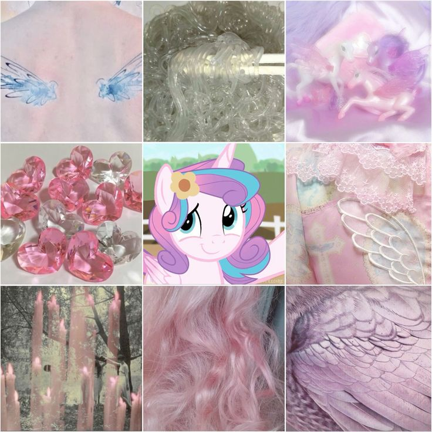

| Vorname: |
Flurry Heart |
| Nachname: |
-- |
| Geburtsort: |
-- |
| Wohnort: |
Kristall-Königreich |
| Spezies: |
Alihorn |
| Geschlecht: |
weiblich |
| Tätigkeit: |
------- |
| sexualität: |
------- |
| Hobbys: |
 |
 |
 |
| Größe: |
110px breit & 225 px Hoch |
| Lieblingsfarbe: |
Lila , Blassrosa |
|
Eltern/Geschwister: |
Prinzessin Cadance (Mutter)
Shining Armor (Vater)
Twilight Velvet (Großmutter väterlicher-seits)
Night Light (Großvater väterlicher-seits)
Twilight Sparkle (Tante väterlicherseits)
Prinzessin Celestia (Adoptiv-großtante mütterlicher-seits)
Prinzessin Luna (Adoptiv-großtante mütterlicher-seits)
Prinz Blaublut (Adoptiv-onkel 2. Grades mütterlicher-seits)
Prinzessin Amore (entfernte Verwandt-schaft (mütterlicher-seits)
|
|
Schönheitsfleck: |
 |
| Über Flurry Heart: |
Prinzessin Flurry Heart ist ein Alihorn und die Tochter von Cadance und Shining Armor .
Flurry Heart wurde bereits als Alihorn geboren. Ihre Magie ist schon so stark das sie mit einem Schuss sämtliche Zwischenböden des Kristallpalastes durchschlagen kann. Auch ist Flurry schon eine passable Fliegerin und kräftig genug um Pinkie Pie mit sich zu ziehen. Außerdem scheint sie ziemlich lebhaft und ein bisschen frech zu sein.
 |